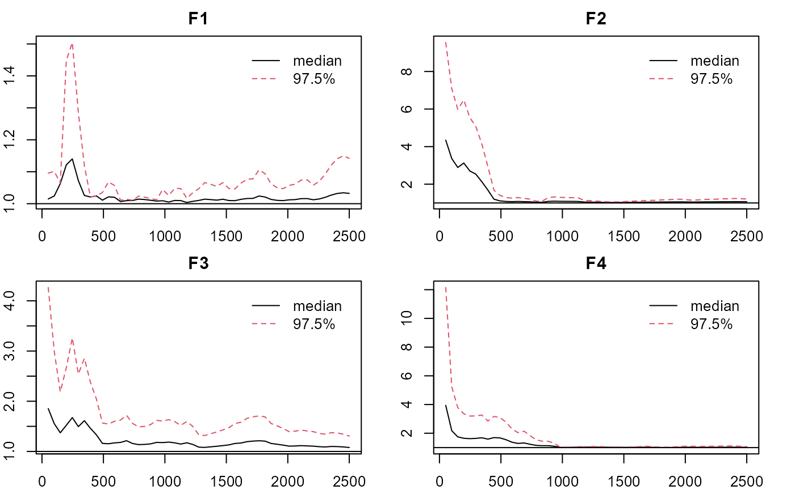

pcirm-examples
Jinsong Chen
2021-03-19
Source:vignettes/Examples/pcirm-examples.Rmd
pcirm-examples.RmdNote: the estimation process can be time consuming depending on the computing power. You can same some time by reducing the length of the chains.
Dichotomous Data with Local Dependence and Minor Trait:
- Load the package, obtain the data, loading pattern (qlam), and no. of factors/traits.
## LAWBL Package (version 1.4.0; 2021-03-21)
## For tutorials, see https://jinsong-chen.github.io/LAWBL/dat <- sim24ccfa21$dat head(dat)
## [,1] [,2] [,3] [,4] [,5] [,6] [,7] [,8] [,9] [,10] [,11] [,12] [,13] [,14]
## [1,] 2 1 2 2 2 2 2 2 1 2 2 2 2 2
## [2,] 2 2 2 2 1 2 2 2 1 1 1 1 1 1
## [3,] 1 1 1 1 1 1 1 1 1 1 1 1 1 1
## [4,] 2 1 2 1 1 1 1 1 1 1 1 1 1 1
## [5,] 2 2 2 2 2 2 2 2 2 2 2 1 2 2
## [6,] 1 1 1 1 2 2 1 1 2 1 2 1 1 1
## [,15] [,16] [,17] [,18] [,19] [,20] [,21] [,22] [,23] [,24]
## [1,] 1 1 1 1 1 1 1 1 1 1
## [2,] 2 2 1 1 1 2 2 1 2 2
## [3,] 1 1 2 2 1 1 1 1 1 2
## [4,] 1 1 1 1 2 1 1 1 2 2
## [5,] 2 2 2 2 2 1 2 2 2 2
## [6,] 2 2 1 1 1 1 1 1 1 1J <- ncol(dat) # no. of items qlam <- sim24ccfa21$qlam qlam
## [,1] [,2] [,3] [,4]
## [1,] 0.7 0.0 0.0 0.00
## [2,] 0.7 0.0 0.0 0.00
## [3,] 0.7 0.0 0.0 0.00
## [4,] 0.7 0.0 0.0 0.00
## [5,] 0.7 0.0 0.0 0.00
## [6,] 0.7 0.0 0.0 0.00
## [7,] 0.7 0.0 0.0 0.00
## [8,] 0.7 0.0 0.0 0.00
## [9,] 0.0 0.7 0.0 0.00
## [10,] 0.0 0.7 0.0 0.00
## [11,] 0.0 0.7 0.0 0.00
## [12,] 0.0 0.7 0.0 0.00
## [13,] 0.0 0.7 0.0 0.00
## [14,] 0.0 0.7 0.0 0.00
## [15,] 0.0 0.7 0.0 0.55
## [16,] 0.0 0.7 0.0 0.55
## [17,] 0.0 0.0 0.7 0.00
## [18,] 0.0 0.0 0.7 0.00
## [19,] 0.0 0.0 0.7 0.00
## [20,] 0.0 0.0 0.7 0.00
## [21,] 0.0 0.0 0.7 0.00
## [22,] 0.0 0.0 0.7 0.00
## [23,] 0.0 0.0 0.7 0.55
## [24,] 0.0 0.0 0.7 0.55K <- ncol(qlam) # no. of factors
- PCIRM with primary loadings and three traits specified. Longer chain is suggested for stabler performance (burn=iter=5,000 by default).
ipf <- 8 Q<-matrix(-1,J,K-1); # -1 for unspecified items Q[1:8,1]<-Q[9:16,2]<-Q[17:24,3]<-1 Q
## [,1] [,2] [,3]
## [1,] 1 -1 -1
## [2,] 1 -1 -1
## [3,] 1 -1 -1
## [4,] 1 -1 -1
## [5,] 1 -1 -1
## [6,] 1 -1 -1
## [7,] 1 -1 -1
## [8,] 1 -1 -1
## [9,] -1 1 -1
## [10,] -1 1 -1
## [11,] -1 1 -1
## [12,] -1 1 -1
## [13,] -1 1 -1
## [14,] -1 1 -1
## [15,] -1 1 -1
## [16,] -1 1 -1
## [17,] -1 -1 1
## [18,] -1 -1 1
## [19,] -1 -1 1
## [20,] -1 -1 1
## [21,] -1 -1 1
## [22,] -1 -1 1
## [23,] -1 -1 1
## [24,] -1 -1 1## $N
## [1] 1000
##
## $J
## [1] 24
##
## $K
## [1] 3
##
## $`Miss%`
## [1] 0
##
## $`LD enabled`
## [1] TRUE
##
## $`Burn in`
## [1] 5000
##
## $Iteration
## [1] 5000
##
## $`No. of sig lambda`
## [1] 24
##
## $`True Factor`
## [1] TRUE TRUE TRUE
##
## $`Adj. PSR`
## Point est. Upper C.I.
## F1 1.001023 1.005373
## F2 1.026844 1.051922
## F3 1.031324 1.120118
##
## $`No. of sig LD terms`
## [1] 7
##
## $`Cat Items`
## [1] 1 2 3 4 5 6 7 8 9 10 11 12 13 14 15 16 17 18 19 20 21 22 23 24
##
## $`max No. of categories`
## [1] 2summary(m0, what = 'qlambda')
## [,1] [,2] [,3]
## I1 0.7073212 0.0000000 0.0000000
## I2 0.7023527 0.0000000 0.0000000
## I3 0.7190178 0.0000000 0.0000000
## I4 0.6795131 0.0000000 0.0000000
## I5 0.7366619 0.0000000 0.0000000
## I6 0.6780092 0.0000000 0.0000000
## I7 0.7288940 0.0000000 0.0000000
## I8 0.7603765 0.0000000 0.0000000
## I9 0.0000000 0.6292097 0.0000000
## I10 0.0000000 0.7037372 0.0000000
## I11 0.0000000 0.7071835 0.0000000
## I12 0.0000000 0.7219753 0.0000000
## I13 0.0000000 0.6873067 0.0000000
## I14 0.0000000 0.6986440 0.0000000
## I15 0.0000000 0.7300944 0.0000000
## I16 0.0000000 0.7084253 0.0000000
## I17 0.0000000 0.0000000 0.6508598
## I18 0.0000000 0.0000000 0.7471731
## I19 0.0000000 0.0000000 0.7379267
## I20 0.0000000 0.0000000 0.7460009
## I21 0.0000000 0.0000000 0.7174642
## I22 0.0000000 0.0000000 0.7006867
## I23 0.0000000 0.0000000 0.6665714
## I24 0.0000000 0.0000000 0.6741628summary(m0, what = 'offpsx') #summarize significant LD terms
## row col est sd lower upper sig
## var131 8 7 0.1217913 0.04206203 0.04430402 0.2027489 1
## var247 16 15 0.1596542 0.04820062 0.06908829 0.2561632 1
## var254 23 15 0.1339476 0.04328091 0.04512360 0.2143839 1
## var255 24 15 0.1304417 0.04391352 0.04506636 0.2142740 1
## var263 23 16 0.1409976 0.04161473 0.05246648 0.2156470 1
## var264 24 16 0.1396390 0.04337283 0.06008362 0.2249444 1
## var299 24 23 0.1637412 0.04444114 0.08284933 0.2545223 1summary(m0,what='int')
## est sd lower upper sig
## I1 0.0110936495 0.02851683 -0.04414122 0.06787229 0
## I2 -0.0066399092 0.02872590 -0.05950745 0.05224967 0
## I3 0.0032654644 0.02798553 -0.05370047 0.05635353 0
## I4 -0.0210353583 0.02796518 -0.07647111 0.03272079 0
## I5 0.0053600860 0.02805838 -0.04859637 0.06133300 0
## I6 0.0162121609 0.02941003 -0.04118139 0.07355743 0
## I7 -0.0017032465 0.02730776 -0.05438390 0.05151387 0
## I8 -0.0126128250 0.02664526 -0.06196206 0.04259684 0
## I9 -0.0145227111 0.03060611 -0.07319988 0.04480555 0
## I10 -0.0208477960 0.02892237 -0.07372358 0.03838463 0
## I11 0.0003940825 0.02821073 -0.05485400 0.05472707 0
## I12 0.0014150021 0.02876256 -0.05274820 0.05886212 0
## I13 0.0083261655 0.02824869 -0.04750540 0.06376050 0
## I14 -0.0082080727 0.02824239 -0.05870745 0.04885999 0
## I15 -0.0027936752 0.02723254 -0.05572051 0.04998132 0
## I16 0.0257462095 0.02805609 -0.02734808 0.08142929 0
## I17 -0.0036324302 0.03011916 -0.06462583 0.05248512 0
## I18 -0.0029508130 0.02720895 -0.05549865 0.04956443 0
## I19 -0.0041505414 0.02750191 -0.05725601 0.04881255 0
## I20 -0.0161972971 0.02772599 -0.07099889 0.03633948 0
## I21 -0.0060111975 0.02857102 -0.06318462 0.04875618 0
## I22 0.0071081693 0.02760905 -0.04755677 0.05994885 0
## I23 0.0110458480 0.02762255 -0.04308787 0.06418182 0
## I24 0.0041939498 0.02752843 -0.04957194 0.05845961 0summary(m0,what='eigen')
## est sd lower upper sig
## F1 4.203205 0.3435579 3.547410 4.897381 1
## F2 4.021131 0.3504065 3.370975 4.721933 1
## F3 4.092835 0.3700627 3.427984 4.842552 1#plotting factorial eigenvalue plot_lawbl(m0) # trace

plot_lawbl(m0, what='density') #density

plot_lawbl(m0, what='APSR') #adj, PSRF

- PCIRM-LI with four traits and two cross-loadings specified based on results from previous step. Longer chain is suggested for stabler performance.
Q<-cbind(Q,-1); Q[c(15:16),K] <- 1 m1<-pcirm(dat = dat,Q= Q,LD = FALSE, cati = -1,burn = 5000,iter = 5000) summary(m1)
## $N
## [1] 1000
##
## $J
## [1] 24
##
## $K
## [1] 4
##
## $`Miss%`
## [1] 0
##
## $`LD enabled`
## [1] FALSE
##
## $`Burn in`
## [1] 5000
##
## $Iteration
## [1] 5000
##
## $`No. of sig lambda`
## [1] 28
##
## $`True Factor`
## [1] TRUE TRUE TRUE TRUE
##
## $`Adj. PSR`
## Point est. Upper C.I.
## F1 1.016977 1.075861
## F2 1.000155 1.000651
## F3 1.009735 1.016849
## F4 1.022448 1.063077
##
## $`Cat Items`
## [1] 1 2 3 4 5 6 7 8 9 10 11 12 13 14 15 16 17 18 19 20 21 22 23 24
##
## $`max No. of categories`
## [1] 2summary(m1, what = 'qlambda') #close to qlam
## [,1] [,2] [,3] [,4]
## I1 0.7015585 0.0000000 0.0000000 0.0000000
## I2 0.7018761 0.0000000 0.0000000 0.0000000
## I3 0.6805200 0.0000000 0.0000000 0.0000000
## I4 0.6637338 0.0000000 0.0000000 0.0000000
## I5 0.7269926 0.0000000 0.0000000 0.0000000
## I6 0.6559572 0.0000000 0.0000000 0.0000000
## I7 0.8231124 0.0000000 0.0000000 0.0000000
## I8 0.8586811 0.0000000 0.0000000 0.0000000
## I9 0.0000000 0.6259166 0.0000000 0.0000000
## I10 0.0000000 0.7252628 0.0000000 0.0000000
## I11 0.0000000 0.7262583 0.0000000 0.0000000
## I12 0.0000000 0.7233153 0.0000000 0.0000000
## I13 0.0000000 0.6818030 0.0000000 0.0000000
## I14 0.0000000 0.7016692 0.0000000 0.0000000
## I15 0.0000000 0.6830634 0.0000000 0.5369158
## I16 0.0000000 0.6764266 0.0000000 0.5766409
## I17 0.0000000 0.0000000 0.6322115 0.0000000
## I18 0.0000000 0.0000000 0.7510981 0.0000000
## I19 0.0000000 0.0000000 0.7446439 0.0000000
## I20 0.0000000 0.0000000 0.7753643 0.0000000
## I21 0.0000000 0.0000000 0.7103171 0.0000000
## I22 0.0000000 0.0000000 0.7103544 0.0000000
## I23 0.0000000 0.0000000 0.6778251 0.4861973
## I24 0.0000000 0.0000000 0.6827539 0.4686940- PCIRM with four traits and four cross-loadings specified based on results from previous step. Longer chain is suggested for stabler performance.
## [,1] [,2] [,3] [,4]
## [1,] 1 -1 -1 -1
## [2,] 1 -1 -1 -1
## [3,] 1 -1 -1 -1
## [4,] 1 -1 -1 -1
## [5,] 1 -1 -1 -1
## [6,] 1 -1 -1 -1
## [7,] 1 -1 -1 -1
## [8,] 1 -1 -1 -1
## [9,] -1 1 -1 -1
## [10,] -1 1 -1 -1
## [11,] -1 1 -1 -1
## [12,] -1 1 -1 -1
## [13,] -1 1 -1 -1
## [14,] -1 1 -1 -1
## [15,] -1 1 -1 1
## [16,] -1 1 -1 1
## [17,] -1 -1 1 -1
## [18,] -1 -1 1 -1
## [19,] -1 -1 1 -1
## [20,] -1 -1 1 -1
## [21,] -1 -1 1 -1
## [22,] -1 -1 1 -1
## [23,] -1 -1 1 1
## [24,] -1 -1 1 1## $N
## [1] 1000
##
## $J
## [1] 24
##
## $K
## [1] 4
##
## $`Miss%`
## [1] 0
##
## $`LD enabled`
## [1] TRUE
##
## $`Burn in`
## [1] 5000
##
## $Iteration
## [1] 5000
##
## $`No. of sig lambda`
## [1] 28
##
## $`True Factor`
## [1] TRUE TRUE TRUE TRUE
##
## $`Adj. PSR`
## Point est. Upper C.I.
## F1 1.017506 1.081698
## F2 1.048121 1.201305
## F3 1.048191 1.202606
## F4 1.020375 1.090734
##
## $`No. of sig LD terms`
## [1] 1
##
## $`Cat Items`
## [1] 1 2 3 4 5 6 7 8 9 10 11 12 13 14 15 16 17 18 19 20 21 22 23 24
##
## $`max No. of categories`
## [1] 2summary(m2, what = 'qlambda')
## [,1] [,2] [,3] [,4]
## I1 0.7119849 0.0000000 0.0000000 0.0000000
## I2 0.7085875 0.0000000 0.0000000 0.0000000
## I3 0.6984848 0.0000000 0.0000000 0.0000000
## I4 0.6735758 0.0000000 0.0000000 0.0000000
## I5 0.7285675 0.0000000 0.0000000 0.0000000
## I6 0.6667934 0.0000000 0.0000000 0.0000000
## I7 0.7358313 0.0000000 0.0000000 0.0000000
## I8 0.7613046 0.0000000 0.0000000 0.0000000
## I9 0.0000000 0.6178043 0.0000000 0.0000000
## I10 0.0000000 0.7187559 0.0000000 0.0000000
## I11 0.0000000 0.7133716 0.0000000 0.0000000
## I12 0.0000000 0.7118691 0.0000000 0.0000000
## I13 0.0000000 0.6805949 0.0000000 0.0000000
## I14 0.0000000 0.6980859 0.0000000 0.0000000
## I15 0.0000000 0.6428682 0.0000000 0.5170999
## I16 0.0000000 0.6173186 0.0000000 0.5384280
## I17 0.0000000 0.0000000 0.6337263 0.0000000
## I18 0.0000000 0.0000000 0.7370532 0.0000000
## I19 0.0000000 0.0000000 0.7361329 0.0000000
## I20 0.0000000 0.0000000 0.7597328 0.0000000
## I21 0.0000000 0.0000000 0.7132508 0.0000000
## I22 0.0000000 0.0000000 0.7001590 0.0000000
## I23 0.0000000 0.0000000 0.6177486 0.5409375
## I24 0.0000000 0.0000000 0.6275576 0.5277085summary(m2, what = 'offpsx') #summarize significant LD terms
## row col est sd lower upper sig
## 8.00000000 7.00000000 0.11868701 0.03939028 0.04238731 0.19374204 1.00000000summary(m2,what='int')
## est sd lower upper sig
## I1 0.010699868 0.02829893 -0.04544439 0.06401167 0
## I2 -0.005554296 0.02769940 -0.05857119 0.05108747 0
## I3 0.003684847 0.02854606 -0.05350907 0.05790291 0
## I4 -0.021296345 0.02823977 -0.07485215 0.03618672 0
## I5 0.005871652 0.02793745 -0.05031973 0.05788718 0
## I6 0.017349383 0.02889870 -0.03936600 0.07522939 0
## I7 -0.002309200 0.02692398 -0.05575522 0.05070307 0
## I8 -0.012557360 0.02668324 -0.06420779 0.03984712 0
## I9 -0.014571271 0.02974935 -0.06907860 0.04795044 0
## I10 -0.018731692 0.02828322 -0.07294465 0.03710033 0
## I11 0.002554355 0.02768177 -0.05000177 0.05634033 0
## I12 0.001521172 0.02844709 -0.05064689 0.06157626 0
## I13 0.008892457 0.02788600 -0.04645283 0.06524573 0
## I14 -0.007377328 0.02812445 -0.06287018 0.04612247 0
## I15 -0.007979780 0.02120298 -0.05000906 0.03294650 0
## I16 0.016018747 0.02101757 -0.02573994 0.05614411 0
## I17 -0.004421367 0.02895649 -0.06284108 0.04936245 0
## I18 -0.002035335 0.02730897 -0.05399968 0.05276322 0
## I19 -0.002754759 0.02718577 -0.05592466 0.05182984 0
## I20 -0.015135368 0.02705585 -0.06995417 0.03582890 0
## I21 -0.005179718 0.02775904 -0.06138062 0.04754609 0
## I22 0.007592773 0.02751836 -0.04579798 0.06050977 0
## I23 0.002320974 0.02040879 -0.03790924 0.04130042 0
## I24 -0.003055374 0.02156224 -0.04645136 0.03685078 0summary(m2,what='eigen')
## est sd lower upper sig
## F1 4.161354 0.3416213 3.4962519 4.807142 1
## F2 3.761695 0.4103767 2.9986422 4.552465 1
## F3 3.936403 0.3776670 3.2140146 4.723065 1
## F4 1.250469 0.1918151 0.8925646 1.640602 1#plotting factorial eigenvalue plot_lawbl(m2) # trace

plot_lawbl(m2, what='density') #density

plot_lawbl(m2, what='APSR') #adj, PSRF
